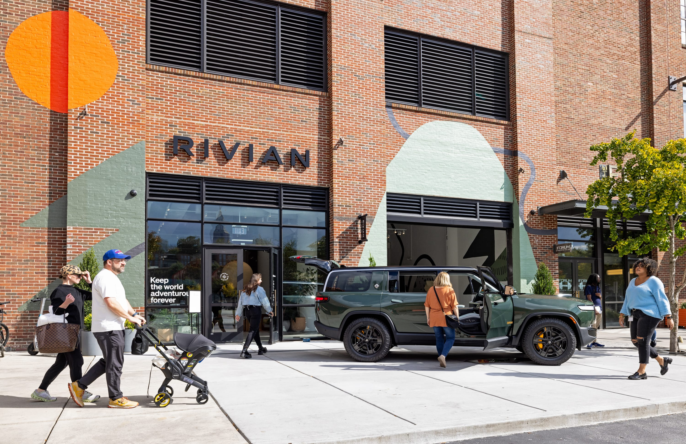
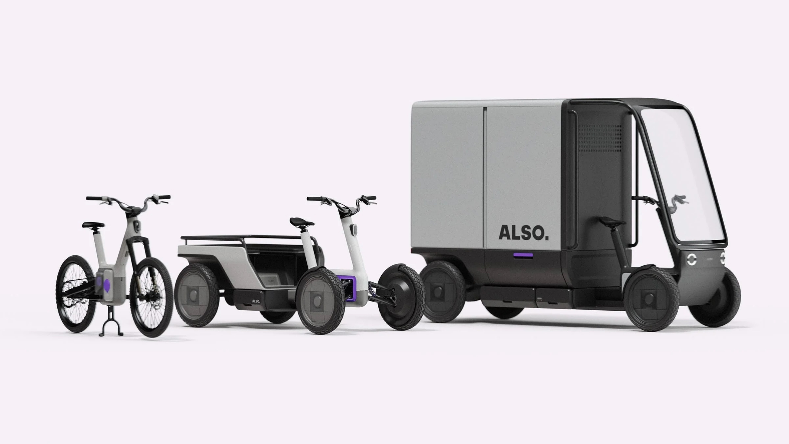

Picture Atlanta in 2030. Not a fantasy version. A version built only from hardware that already exists or is under active development.
The R2 that pulls up when you call an Uber is electric and, depending on the year and the city block, may not have a driver. Rivian and Uber agreed in March 2026 to a deal in which Uber would invest up to $1.25 billion in Rivian and purchase up to 50,000 self-driving R2s by 2030, according to the Financial Times. The city's municipal maintenance crews are running electric cargo quads on short-range deliveries in the downtown core. A subsidized e-bike program for city employees has reduced short car trips within the transit network. Certain downtown corridors operate under restricted vehicle access: combustion vehicles pay a daily entry fee, registered EVs move freely. Air quality monitors, placed in neighborhoods that currently have none, are tracking what changes.
This version of Atlanta would not require a technological breakthrough. It would require a planning decision.

Rivian already has a retail presence in Atlanta. The Georgia manufacturing plant, targeting 300,000 annual units at full capacity, is located outside the city. Image: Rivian
Atlanta has a documented reason to make that decision. The American Lung Association's 2025 State of the Air report gave the city failing grades for both ground-level ozone and short-term particle pollution, as reported by the Georgia Recorder in April 2025. Atlanta ranked 48th worst out of 228 American cities for ozone, recording 5.5 unhealthy ozone days per year, up from 1.8 in the prior year's report. The Atlanta Regional Commission estimates transportation contributes roughly 10 percent of the region's total air pollution. Only 27 of Georgia's 159 counties have the monitoring equipment to measure how safe the air is. The full picture is likely worse than what is being tracked.
Rivian's Georgia plant, when fully ramped at 300,000 annual units of capacity per the company's Q1 2026 earnings disclosure, is located outside Atlanta. The proximity is a coincidence. But it is the kind of coincidence worth looking at seriously.
Why This Matters More Than It Sounds
The case for the hypothetical above is not aesthetic. It is not about making cities feel nicer or quieter, though that would be a real outcome. It is about a cost that is currently distributed across millions of people who never agreed to absorb it.
In March 2025, the Health Effects Institute published a study led by Dr. Kai Chen at Yale University examining what happened to mortality in regions where air pollution dropped sharply during the 2020 COVID lockdowns. The study covered California, central and southern Italy, Germany, and China's Jiangsu province, covering more than 130 million people combined. Using five years of prepandemic mortality data and a causal modeling approach, the researchers estimated the health impact of the air quality changes that lockdowns produced.
In California, where NO2 concentrations fell measurably during the lockdown period, the model estimated 0.44 fewer deaths per 100,000 people attributable to the air quality improvement. In central and southern Italy, that figure reached 4.66 per 100,000. In Jiangsu, it was 1.41 per 100,000. The study also noted that these improvements, achieved in weeks by reducing vehicle traffic, were comparable in magnitude to what the United States achieved through Clean Air Act enforcement over 33 years.
Germany was the exception. NO2 levels there barely moved, and PM2.5 concentrations rose, attributable to wildfire smoke from Eastern Europe and Saharan dust arriving during the same period. The estimated mortality burden from air pollution increased in Germany as a result. The benefit of cleaner air is not automatic. It requires the emissions to actually fall.
The Chen et al. team concluded that a sustained environmental policy with aggressive emission control measures could bring substantial health benefits in the long term. Atlanta's worse baseline relative to California means the potential margin of improvement is larger. The math points in one direction.
The noise dimension adds a separate cost on top of the emissions cost. The European Environment Agency's 2020 environmental noise report found that excessive urban noise contributes to approximately 12,000 premature deaths annually in Europe. The World Health Organization recommends residential nighttime noise levels stay below 40 decibels for restful sleep. Urban traffic regularly exceeds 85 decibels. Electric vehicles at idle are approximately 20 decibels quieter than combustion equivalents, with a gap of 2 to 4 decibels at low urban speeds. The advantage narrows at highway speeds as tire and wind noise dominate both vehicle types. The health benefit is specifically urban, which is exactly where the burden is concentrated.
The Pieces Are Already There
Rivian did not set out to address urban air quality. Its affiliated spinoff ALSO did not launch its e-bike and cargo quads as a public health initiative. But what these companies have assembled is, piece by piece, the infrastructure a serious city electrification program would need.
The personal and shared-ride layer: the R2, with autonomous capability being deployed in the Uber network. The commercial delivery layer: Rivian's electric delivery vans operating in Amazon's urban logistics network across more than 70 micromobility hubs in the US and Europe, according to Amazon's Director of Global Fleet Emily Barber, quoted at the ALSO product launch. The last-mile layer: ALSO's products, the TM-B e-bike and two quad variants.

The ALSO product lineup: TM-B e-bike, Consumer TM-Q, and Commercial TM-Q with enclosed cargo box. Amazon has committed to deploying thousands of the commercial variant across Europe and the US. Image: ALSO
ALSO was spun out of Rivian in March 2025. Eclipse Ventures led the founding investment of $105 million, per electrive.com's reporting on the launch. RJ Scaringe serves as chairman of ALSO's board. Chris Yu, ALSO's co-founder and president, has described the company's premise simply: the answer to urban transportation is not cars or bikes, but all of the above, every size of vehicle matched to the trip it actually suits.
The TM-B uses a proprietary pedal-by-wire system called DreamRide, in which there is no mechanical connection between the pedals and the rear wheel. Software controls the entire relationship between pedal input and propulsion, adapting to different riders and terrain without requiring the rider to manage gears. It launched at $4,500. The Commercial TM-Q, which adds a roof and an enclosed cargo box, is the product Amazon has committed to deploy in thousands across the US and Europe. ALSO also makes a Consumer TM-Q, a four-wheeled pedal-assist vehicle sized and approved for cycle infrastructure in both the US and Europe.
Cities that have committed to this kind of coordinated shift have produced measurable results. Shenzhen completed the electrification of its entire public bus fleet, more than 16,000 vehicles, by 2018. Norway pushed battery electric vehicles to more than 80 percent of new car sales in 2023 through sustained purchase incentives and infrastructure investment. London expanded its cycling network from roughly 90 kilometers to more than 430 kilometers over the past decade, generating approximately 1.5 million daily bike trips, according to figures cited by Chris Yu in a Micromobility Industries podcast. None of these outcomes happened because technology became available. They happened because governments made a sustained decision to deploy it.
The Decision Problem, and a European Precedent Worth Borrowing
The obstacle to the Atlanta hypothetical is not the vehicles. The R2 exists. The TM-B exists. The Commercial TM-Q is in active deployment with Amazon. The Uber autonomous platform is under development and funded. The hardware barrier that kept the electric city as a concept rather than a reality has been substantially cleared.
What remains is a governance problem. And Europe, specifically Italy, has been running a relevant experiment for years.
Italian cities use a system called Zona a Traffico Limitato, or ZTL: designated zones in city centers where vehicle access is restricted to reduce pollution and congestion. Cameras enforce entry automatically. Gas and diesel vehicles are largely excluded or charged for access. Electric vehicles, in many ZTL zones, move freely. In Milan's Area C, which functions as a low-emission zone with a daily entry fee for combustion vehicles, EVs have free access. The policy is a lever a city can pull without banning anything outright. It changes the economics of each trip in a way that accumulates across millions of decisions over time.
The ZTL model is not without friction. In Italy, EV owners still need to register their license plate with the relevant local authority in advance. Automatic cameras issue fines to unregistered vehicles, including EVs, regardless of the vehicle's emissions profile. That administrative requirement is real and has caught drivers off guard. Any American city adapting this model would inherit a similar implementation challenge: the policy framework and the administrative infrastructure have to be built together, or the policy produces the wrong outcomes.
An Atlanta ZTL equivalent applied hypothetically to its downtown core would look different from Rome or Milan. The city's layout, parking culture, and transit gaps would require a different design. But the core logic transfers: restricted access for combustion vehicles, free or subsidized access for EVs, enforced by camera rather than checkpoint. Pair that with the Uber autonomous R2 network, the ALSO cargo quad fleet for deliveries, and a TM-B program for city employees, and what you have is a coherent system rather than a collection of individual initiatives.
The difference between a collection of initiatives and a coherent system is what separates the cities that moved the needle from the ones that announced intentions. London built the cycling infrastructure and then measured the ridership. Oslo maintained its EV incentives long enough to change consumer behavior at scale. Shenzhen did not offer one bus route as a pilot. It electrified the entire fleet.
Atlanta has the air quality data, the health stakes, and a geographic coincidence that deserves at least a second look. What it does not yet have is the decision.
That shift, from technology problem to planning problem, matters more than it tends to get credited for. Technology problems wait for inventions. Planning problems wait for decisions. The invention part is largely done.